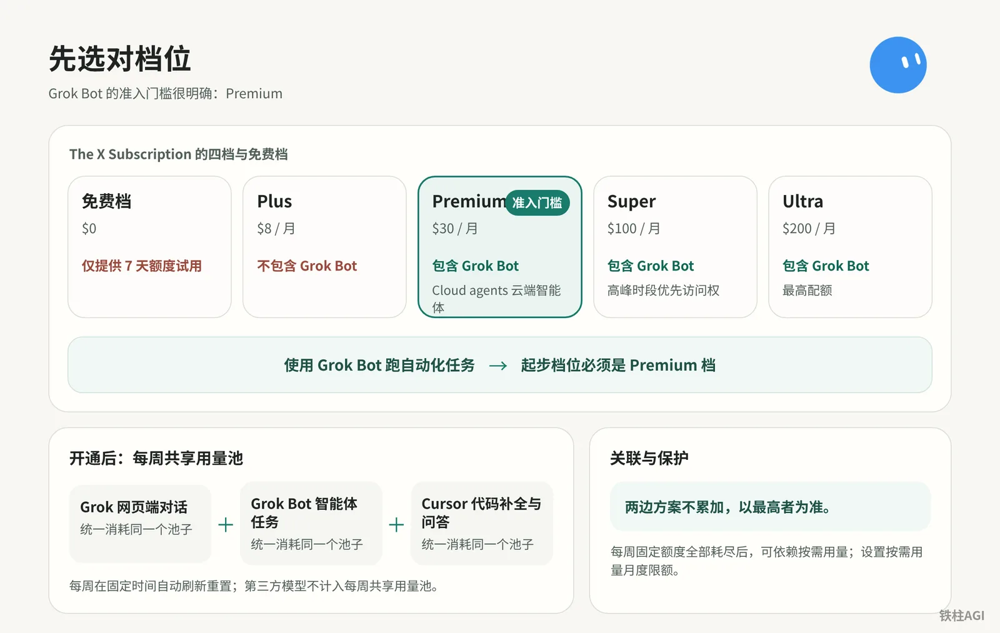
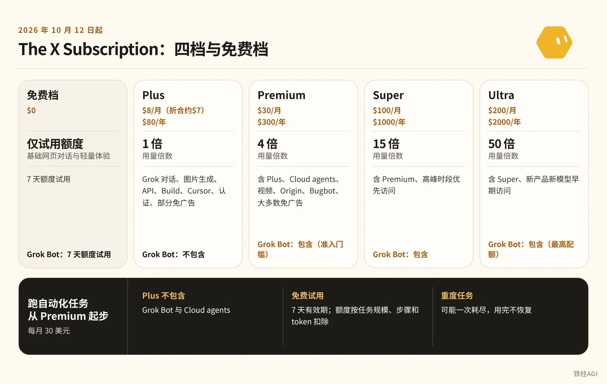
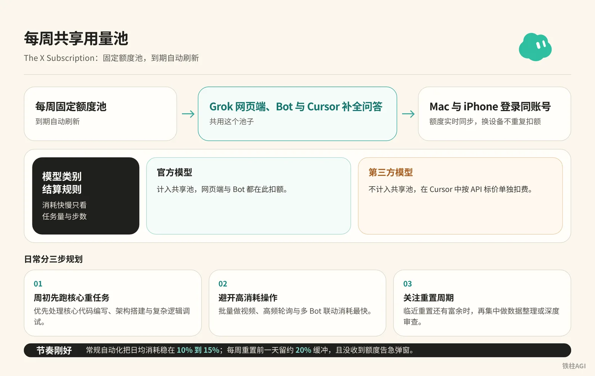
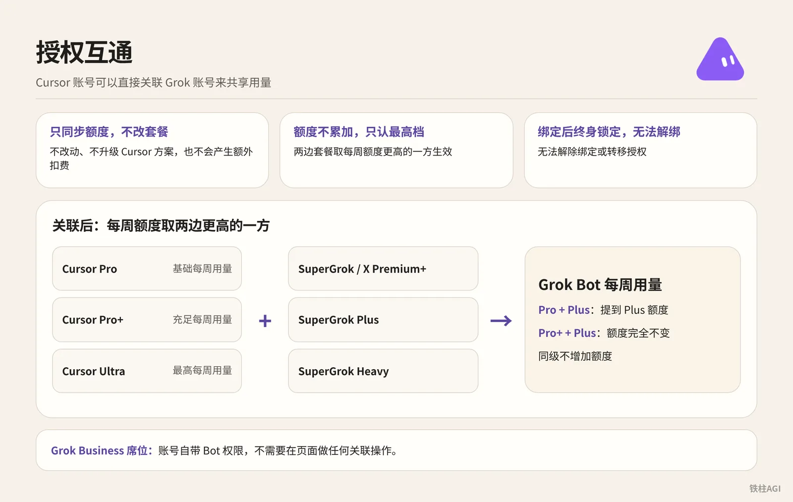
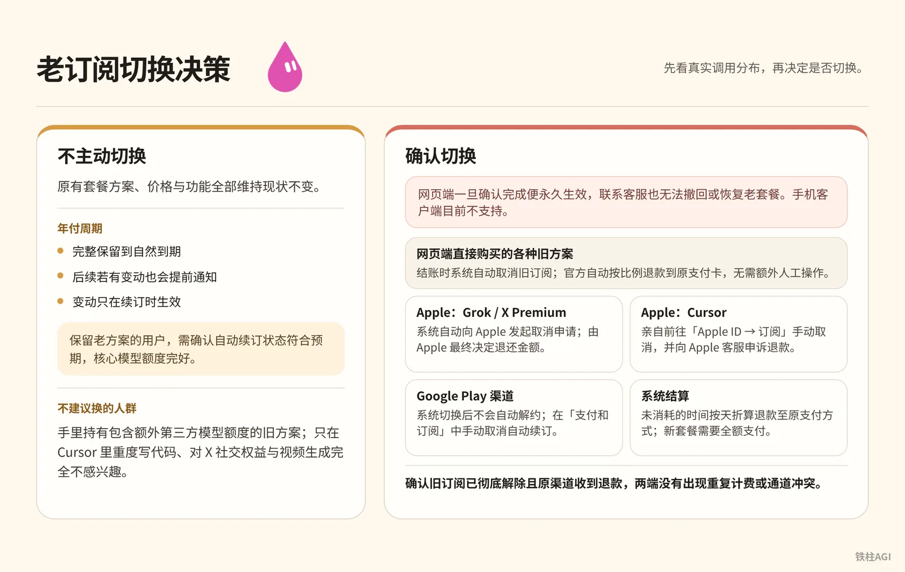

铁柱AGI · 16/60
第 2 章 方案与订阅：先选对档位
目前可以直接支付宝。 在网页端开通 X 或 Grok 订阅时，将账单地区选择为中国大陆、中国香港、中国澳门或中国台湾，即可在支付方式中选用支付宝或银联，按美元价格折算人民币扣费（两者共用该支付系统）。目前官方尚未发布正式公告，部分账号可能仍在灰度测试中，实际可用情况请以结账页实时显示为准。
新手选购常遇到三处坑点。
- 买最便宜的入门套餐，打开客户端找不到智能体 (agent (an AI that acts on its own))入口。
- Cursor 订阅与 SuperGrok (xAI's paid subscription plan) 每周额度 (quota (how much use your plan allows))不累加，系统只认更高一侧。
- 手机 App 内点击升级无法切换，还会丢失原有的第三方模型用量。
Grok Bot (xAI's AI assistant that comes with its own computer) 运行依托额度。周用量耗尽且未配置按需保护，云端自动化任务立刻停摆。
官方自 2026 年 10 月 12 日起推行 The X Subscription 统一订阅，分免费档与四个付费档。

想用 Grok Bot 需要买哪个订阅套餐？
统一订阅分为 Plus、Premium、Super 与 Ultra 四档，因 Plus 档完全不含 Grok Bot，跑自动化任务起步必须选择每月 30 美元的 Premium 档。

是什么
2026 年 10 月 12 日起整合为 The X Subscription，年付为月付 10 倍。
按每美元用量折算（Plus 为基准 1，Premium 约 1.07，Super 约 1.2，Ultra 约 2.0，作者自述，未核），档位越高自家模型越划算。
| 方案 | 网页端月付 / 年付 | Grok Bot |
|---|---|---|
| 免费档 | $0 | 7 天额度试用 |
| Plus | $8/月（折合约$7）/ $80/年 | 不包含 |
| Premium | $30/月 / $300/年 | 包含（准入门槛） |
| Super | $100/月 / $1000/年 | 包含 |
| Ultra | $200/月 / $2000/年 | 包含（最高配额） |
Plus 档完全不包含 Grok Bot 与 Cloud agents，跑自动化任务起步必须选每月 30 美元的 Premium 档。免费试用限制 7 天有效期，额度按任务规模、步骤和 token 扣除，重度任务可能一次耗尽，用完不恢复。
怎么做
开通建议走网页端，避免在移动端付款。
- 浏览器访问统一订阅页面 grok.com/com/overlay/subscribe。
- 登录工作用的 X 或 Grok 账户。
- 选 Premium 档（$30/月；社区曾见首月 5 折 $15 活动，以结账页为准）。
- 选月付不要直接勾年付，方便随时换档或换工具。
- 使用支持的国际信用卡、借记卡，或网页端 Apple Pay、Google Pay 付款；若将账单地区选择为中国大陆、中国香港、中国澳门或中国台湾，结账页还会出现支付宝与银联付款选项。
- 打开 Grok Bot 客户端登录，确认主界面已解锁智能体创建与运行权限。
详细解读见 《大一统 X 订阅解读：新用户怎么选，老订阅要不要切换？一文讲清楚》 与 《铁柱推文合集①：开通、套餐与额度》。
做到什么程度算好
打开 Grok Bot 桌面客户端，新建任务能分配云端环境执行，且账单显示为按月扣费的 Premium 状态即合格。
Grok Bot 每周用量池是如何结算的？
订阅每周提供固定额度池并在多端实时同步，官方模型在网页端、Bot 与 Cursor 补全中按任务量和步数共用扣除，第三方模型则按标价单独扣费。

是什么
The X Subscription 每周给一个固定额度池，到期自动刷新。Grok 网页端、Bot 与 Cursor 补全问答共用这个池子。Mac 与 iPhone 登录同账号额度实时同步，换设备不重复扣额。
| 模型类别 | 结算规则 |
|---|---|
| 官方模型 | 计入共享池，网页端与 Bot 都在此扣额，消耗快慢只看任务量与步数。 |
| 第三方模型 | 不计入共享池，在 Cursor 中按 API (a way for programs to talk to each other) 标价单独扣费。 |
系统自动指派 Bot 底层模型，统一标为“Grok Bot 用量”，无法自选或屏蔽。详情见 Grok Bot 模型。
怎么做
想避免前三天耗光额度，日常分三步规划。
- 周初先跑核心重任务。优先处理核心代码编写、架构搭建与复杂逻辑调试。
- 避开高消耗操作。批量做视频、高频轮询与多 Bot 联动消耗最快（作者自述，未核）；视频建议去网页端做，别放进 Bot 工作流 (workflow (a chain of steps done in order))。
- 关注重置周期。记清面板上的每周重置日，临近重置还有富余时，再集中做数据整理或深度审查。
做到什么程度算好
常规自动化把日均消耗稳在 10% 到 15%。每周重置前一天留约 20% 缓冲，且没收到额度告急弹窗，节奏就算刚好。
Cursor 怎么关联 Grok 共享额度？
Cursor 可直接关联 Grok 账号映射额度，绑定不改原套餐且无额外扣费，额度按两边最高档生效不累加，且配对后终身锁定无法解绑或转移。

是什么
Cursor 账号可以直接关联 Grok 账号共享用量。绑定前先认准三条硬规则。
- 只同步额度，不改套餐：用量直接映射，不改动现行 Cursor 方案，无额外扣费。
- 额度不累加，只认最高档：取两边每周额度更高者生效，例如 Cursor Pro 绑定 SuperGrok Plus 可升至 Plus 额度。
- 绑定后终身锁定，无法解绑：配对成功后，无论自行操作还是联系客服，都无法解绑或转移授权。
| Cursor 订阅层级 | 等效关联层级 | Grok Bot 每周用量 |
|---|---|---|
| Cursor Pro | SuperGrok / X Premium+ | 基础每周用量 |
| Cursor Pro+ | SuperGrok Plus | 充足每周用量 |
| Cursor Ultra | SuperGrok Heavy | 最高每周用量 |
| 无 Cursor 套餐 | SuperGrok Lite | 不提供 Grok Bot（Lite 档无权限，需升级后关联） |
若分配了 Grok Business 企业席位，账号自带 Bot 权限，无需在页面进行任何关联操作。
怎么做
个人账号绑定在网页端完成。
- 浏览器用接收额度的 Cursor 账号登录 Grok Bot 网页端，先确认主账号无误。
- 打开快速入门入口 cursor.com/bot/onboarding。
- 点击关联 Grok 账户（Link Grok Account），手机端在订阅页点同名按钮。
- 跳转后登录持有 SuperGrok、SuperGrok Plus、SuperGrok Heavy 或 X Premium+ 的账号授权。
- 返回客户端设置页确认状态。新额度最多需要等 24 小时同步，期间切勿重复点击关联或尝试解绑。
完整规则见官方文档 为 Grok Bot 关联 SuperGrok。
分配了企业席位的用户直接登录即可，无需额外绑定。
- 桌面端打开 Settings > General，点 Sign Out 退出当前账号，手机端同理。
- 回到登录页，点击 Sign in with Grok。
- 输入分配了 Business 席位的 Grok 凭据登录，系统会自动挂载该席位额度。
做到什么程度算好
打开桌面端 Settings > Usage & Billing。
管理方案下方显示对应关联层级标签、每周额度条显示重置周期且账户无重复扣款，即绑定成功。
团队版席位与按需付费（On-demand）配置
是什么
团队成员直接用自己的 Cursor 账号登录 Grok Bot，用量走团队配额。管理员不用单独分配席位，成员也免审批。
每周额度用完后会自动走按需用量（账单显示 Billed through Cursor）。系统有保护机制，跑超月度限额的任务不会中途掐断，当前任务能完整跑完。
怎么做
- 在客户端打开 设置（Settings）> Usage & Billing。
- 找到“按需用量月度限额”，显示 Disabled 就点右侧 Enable 开启。
- 首次配置需绑定信用卡，在 cursor.com/dashboard 点击 支出（Spending）。
- 在 Monthly Limit 填入每月透支上限（比如设 20 或 50 美元防超支）并保存。
iOS 和 Android 移动端 App 没法直接配限额，必须登网页控制台。具体计费详见官方文档 方案和计费。
做到什么程度算好
在 Usage & Billing 中能看到按需用量处于开启状态，且显示设定的限额数值。每周额度耗尽时任务不报错中断，能顺畅切到按需通道继续跑完。
老订阅切换决策与操作指南

是什么
The X Subscription 统一大订阅在 2026 年 10 月 12 日上线。不主动切换的用户，原有方案、价格与功能维持现状不变。年付周期完整保留至自然到期，后续若有变动只在续订时生效。
操作在网页端一旦确认完成便永久生效，联系客服也无法撤回或恢复老套餐。旧订阅结算时自动终止并按天折算退款，退款不能抵扣需全额支付的新套餐，账单周期从当天重新计算。手机客户端目前不支持切换，必须在网页端进行。
| 支付渠道与订阅产品 | 退款途径与用户操作 |
|---|---|
| 网页端直接购买的旧方案 | 官方自动按比例退款到原支付卡，无需额外人工操作。 |
| Apple 渠道订阅的 Grok / X Premium | 官方协助提交申请，由 Apple 最终决定退还金额。 |
| Apple 渠道订阅的 Cursor | 用户必须亲自前往 iOS 系统的「Apple ID → 订阅」手动取消，并向 Apple 客服申诉退款。 |
| Google Play 渠道订阅的服务 | 用户必须在 Google Play 的「支付和订阅」中手动取消自动续订。 |
实战案例：社区作者面对大一统订阅的决策实录
社区开发者持有有效期至 2027 年的年费方案（作者自述，未核），排查用量后决定暂时不把手里的老订阅切换为新版大一统订阅，同时关闭原方案自动续费继续观望。
老方案带有长期优惠，强行切换后原优惠直接作废。新方案每周共享池只覆盖自家模型，所有第三方模型调用都需按 API 标价另行付费。新方案每周用量池为各产品共享，Bot 运行过多会挤占网页端与代码补全的正常额度。
| 人群分类 | 典型特征与核心诉求 |
|---|---|
| 建议换的人群 | 单独购买多个零散订阅且每月开销远超 30 美元，主要用官方模型，对 Grok Bot 自动化与 X 账号运营有强捆绑需求。 |
| 不建议换的人群 | 持有含额外第三方模型额度的旧方案，或只在 Cursor 重度写代码、对 X 社交权益与视频生成无需求。 |
切换前先打开用量面板查看真实调用分布，摸清自家模型与第三方模型比例。AI 工具尽量按月订阅，套餐政策两三个月就会重组，锁定长周期年费容易陷入被动（作者自述，未核）。
通过 Apple 订阅过 Cursor 的用户，决定迁移后必须在手机后台手动取消自动续订，网页端升级不会代为处理。
决策分析细节可参阅 《大一统 X 订阅解读：新用户怎么选，老订阅要不要切换？一文讲清楚》 与 《铁柱推文合集①：开通、套餐与额度》。
做到什么程度算好
保留老方案的用户，需确认自动续订状态符合预期，核心模型额度完好。
决定切换新方案的用户，需确认旧订阅已彻底解除且原渠道收到退款，新方案按 Premium 正常计费，两端没有出现重复计费或通道冲突。
用量查看与防损提示词 (prompt (the instruction you give the AI))配置
是什么
先搞清两端术语对应，避免额度不知不觉跑空。
- 每周使用限额（桌面）/ 每周用量（手机）：本周固定池，每周重置。走 SuperGrok 关联代表已关联授权，不包含独立 Cursor 套餐。
- 按需用量（Billed through Cursor）：固定池耗尽后的额外计费。网页端月度限额在支出下方的 Monthly Limit。
- 查看路径：桌面端进设置（Settings）> 用量与计费（Usage & Billing），移动端点每周用量，网页端登录 cursor.com/dashboard。
怎么做
把防损指令直接写入 Bot 系统提示词或首条对话。
常规单 Bot 填第一段，锁定低消耗推理并拉长轮询周期，避免后台空转。
你是一个自动化执行助手。在后续所有任务执行中，必须严格遵守以下资源控制规则：
1. 任务规划阶段必须输出极简执行步骤，禁止发起非必要的递归搜索与多轮冗余工具自检。
2. 在处理代码与文本分析任务时，保持适度推理强度，优先给出核心结果，不要输出冗长无关的修饰性文字。
3. 如果任务涉及定时轮询或周期监控，单次轮询时间间隔不得低于 30 分钟，严禁设置分钟级高频循环。
4. 严禁自行尝试调用外部视频生成或音频转换能力；如遇复杂多步骤任务，分步向我汇报进度并等待确认。多 Bot 协同填第二段。多 Bot 在同任务中频繁广播是吃额度最快的坑（作者自述，未核），必须强制走点对点链式通信。
你在多智能体协同流水线中担任协同节点。必须严格执行以下通信约束：
1. 全面采用点对点（Agent-to-Agent）单向派活与回传，禁止向群聊或未指名的公共上下文广播全量数据。
2. 传递工作流结果时，只提取关键字段与结构化结果摘要，严禁将完整的历史对话日志重复打包转发。
3. 协助任务交付完毕后，立即输出任务终止状态，主动退出协作监听，切断后续消息的被动接收与重复解析。策略参考自 《铁柱推文合集①：开通、套餐与额度》。
做到什么程度算好
注入提示词后，Bot 需明确回复并确认遵守资源约束。连续跑自动化脚本三天，客户端 Usage & Billing 用量曲线平缓，定时任务 (scheduled task (a job that runs at set times))按整点间隔跑且无冗余自检日志，就算达标。
容易踩的坑
选购与订阅
- 用 Bot 别买 8 美元的 Plus 档。它不含 Grok Bot 和 Cloud agents，想用 Bot 必须选 30 美元的 Premium 档。
- Cursor Pro 和 SuperGrok 额度不叠加。两边同时开不会给双倍额度，系统只按一方算，纯属浪费钱。
- 第三方模型单独按 API 标价计费。The X Subscription 周共享池只包自家模型。
- 选月付，别买年费。工具和规则变动频繁，年费会锁死后续调整的自由度。
绑定与退订
- 账号关联终身不可逆。Cursor 绑定 SuperGrok 或 X Premium+ 以后客服无法解绑，千万别拿测试小号授权。
- 老订阅迁移只能在电脑网页端操作，手机 App 没开放切换入口。
- 必须去 iPhone 手动取消 Cursor 续费。网页端换了统一订阅不会自动停掉 App Store 扣费，不手动退订会被两边重复扣。
额度与使用
- 开启按需用量并设月度限额。每周共享池耗尽且没开按需时，Bot 会立刻停止响应。
- 多 Bot 协作走点对点通信。群聊每条消息都会向所有 Bot 广播计算，拉进常驻群聊几轮就会耗尽周额度。
做完怎么验收
- 账号权限：打开桌面端点左下角头像，确认套餐是 Premium、Super 或 Ultra。点击新建 Bot，确认能打开配置面板且 Cloud agents 显示就绪。
- 多端额度：在桌面端 Settings > Usage & Billing 记下每周用量百分比，再打开手机端核对，两边数值必须完全一致。
- 支出保护：浏览器访问 cursor.com/dashboard 的 Spending 页面，确认 Monthly Limit 填了美元上限，客户端按需通道处于 Enable 状态。
- 实际调用：发提示词让 Bot 跑一次简短任务，检查日志确认没有废话、没有多余工具调用，用量微动就合格。